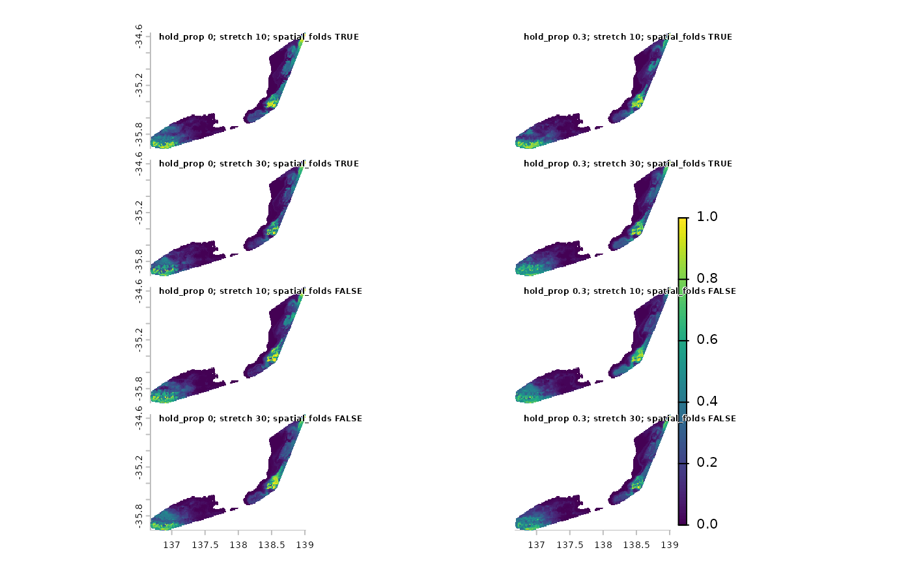

The resulting pred.tif is masked to the boundary provided to the
pred_limit argument of prep_sdm; or generated in prep_sdm from the
pred_limit, limit_buffer and pred_clip arguments.
Usage
predict_sdm(
prep,
full_run,
out_dir,
file_name = "pred.tif",
use_env_naming = FALSE,
predictors = NULL,
is_env_pred = FALSE,
terra_options = NULL,
doClamp = TRUE,
force_new = FALSE,
do_gc = FALSE,
check_tifs = FALSE,
handle_errors = TRUE,
...
)Arguments
- prep
Character or named list. If character, the path to an existing
prep.rds. Otherwise, the result of a call toprep_sdm()with return_val = "object".- full_run
Character or named list. If character, the path to an existing
full_run.rds. Otherwise, the result of a call torun_full_sdm()with return_val = "object".- out_dir
Character. Name of directory into which
.tifs will be saved. Will be created if it does not exist.- file_name
Character. Name to give the output prediction .tif.
- use_env_naming
Logical. If
TRUE, andis_env_predisTRUE, naming will ignorefile_nameand instead generate a name matchingname_env_tif()withlayerbeingthis_taxafromprepandstart_datebeing the minimum availablestart_datefrom the predictors.predappears betweenthis_taxaandstart_date.- predictors
Character. Vector of paths to predictor
.tiffiles.- is_env_pred
Logical. Does the naming of the directory and files in
predictorsfollow the pattern required byenvRaster::parse_env_tif()?- terra_options
Passed to
terra::terraOptions(). e.g. list(memfrac = 0.6)- doClamp
Passed to
terra::predict()(which then passes as...tofun). Possibly orphaned from older envSDM?- force_new
Logical. If output files already exist, should they be remade?
- do_gc
Logical. Run
base::rm(list = ls)andbase::gc()at end of function? Useful to keep RAM use down when running SDMs for many, many taxa, especially if done in parallel.- check_tifs
Logical. Check if any output
.tiffiles error onterra::rast()and delete them if they do. Useful after a crash during predict.- handle_errors
Logical. Use purrr::safely when predicting, enabling the capture of (m)any errors (which are then written to the log). Suggest turning off (i.e.
handle_errors = FALSE) when running in a targets pipeline.- ...
Passed to
...interra::mask()- the last step in theenvSDM::predict_sdmprocess. Used to provide additional arguments toterra::writeRaster.
Value
Character path to predicted file, usually 'pred.tif'. Output .tif
and .log, written to out_dir.
Examples
out_dir <- file.path(system.file(package = "envSDM"), "examples")
# setup -------
data <- readRDS(fs::path(out_dir, "data.rds"))
# predictors -------
preds <- fs::dir_ls(fs::path(out_dir, "tif"))
# Best combo--------
## run full SDM --------
future::plan(future::multisession())
furrr::future_pwalk(list(data$prep
, data$tune
, data$out_dir
)
, \(a, b, c) run_full_sdm(prep = a
, tune = b
, out_dir = c
, use_metric = "combo"
# passed to tune_sdm via dots
, metrics_df = envSDM::sdm_metrics
#, force_new = FALSE
)
)
## predict -------
furrr::future_pwalk(list(data$prep
, data$out_dir
)
, \(a, b) predict_sdm(prep = a
, full_run = fs::path(b, "full_run.rds")
, out_dir = b
, predictors = preds
, check_tifs = TRUE
#, force_new = FALSE
)
)
#> Warning: UNRELIABLE VALUE: Future (<unnamed-73>) unexpectedly generated random numbers without specifying argument 'seed'. There is a risk that those random numbers are not statistically sound and the overall results might be invalid. To fix this, specify 'seed=TRUE'. This ensures that proper, parallel-safe random numbers are produced. To disable this check, use 'seed=NULL', or set option 'future.rng.onMisuse' to "ignore". [future <unnamed-73> (9220e353f90d2e3fdca4103a4d4c0f1f-73); on 9220e353f90d2e3fdca4103a4d4c0f1f@bi-mod-01<800160>]
#> Warning: UNRELIABLE VALUE: Future (<unnamed-74>) unexpectedly generated random numbers without specifying argument 'seed'. There is a risk that those random numbers are not statistically sound and the overall results might be invalid. To fix this, specify 'seed=TRUE'. This ensures that proper, parallel-safe random numbers are produced. To disable this check, use 'seed=NULL', or set option 'future.rng.onMisuse' to "ignore". [future <unnamed-74> (9220e353f90d2e3fdca4103a4d4c0f1f-74); on 9220e353f90d2e3fdca4103a4d4c0f1f@bi-mod-01<800160>]
#> Warning: UNRELIABLE VALUE: Future (<unnamed-75>) unexpectedly generated random numbers without specifying argument 'seed'. There is a risk that those random numbers are not statistically sound and the overall results might be invalid. To fix this, specify 'seed=TRUE'. This ensures that proper, parallel-safe random numbers are produced. To disable this check, use 'seed=NULL', or set option 'future.rng.onMisuse' to "ignore". [future <unnamed-75> (9220e353f90d2e3fdca4103a4d4c0f1f-75); on 9220e353f90d2e3fdca4103a4d4c0f1f@bi-mod-01<800160>]
#> Warning: UNRELIABLE VALUE: Future (<unnamed-76>) unexpectedly generated random numbers without specifying argument 'seed'. There is a risk that those random numbers are not statistically sound and the overall results might be invalid. To fix this, specify 'seed=TRUE'. This ensures that proper, parallel-safe random numbers are produced. To disable this check, use 'seed=NULL', or set option 'future.rng.onMisuse' to "ignore". [future <unnamed-76> (9220e353f90d2e3fdca4103a4d4c0f1f-76); on 9220e353f90d2e3fdca4103a4d4c0f1f@bi-mod-01<800160>]
#> Warning: UNRELIABLE VALUE: Future (<unnamed-77>) unexpectedly generated random numbers without specifying argument 'seed'. There is a risk that those random numbers are not statistically sound and the overall results might be invalid. To fix this, specify 'seed=TRUE'. This ensures that proper, parallel-safe random numbers are produced. To disable this check, use 'seed=NULL', or set option 'future.rng.onMisuse' to "ignore". [future <unnamed-77> (9220e353f90d2e3fdca4103a4d4c0f1f-77); on 9220e353f90d2e3fdca4103a4d4c0f1f@bi-mod-01<800160>]
#> Warning: UNRELIABLE VALUE: Future (<unnamed-78>) unexpectedly generated random numbers without specifying argument 'seed'. There is a risk that those random numbers are not statistically sound and the overall results might be invalid. To fix this, specify 'seed=TRUE'. This ensures that proper, parallel-safe random numbers are produced. To disable this check, use 'seed=NULL', or set option 'future.rng.onMisuse' to "ignore". [future <unnamed-78> (9220e353f90d2e3fdca4103a4d4c0f1f-78); on 9220e353f90d2e3fdca4103a4d4c0f1f@bi-mod-01<800160>]
#> Warning: UNRELIABLE VALUE: Future (<unnamed-79>) unexpectedly generated random numbers without specifying argument 'seed'. There is a risk that those random numbers are not statistically sound and the overall results might be invalid. To fix this, specify 'seed=TRUE'. This ensures that proper, parallel-safe random numbers are produced. To disable this check, use 'seed=NULL', or set option 'future.rng.onMisuse' to "ignore". [future <unnamed-79> (9220e353f90d2e3fdca4103a4d4c0f1f-79); on 9220e353f90d2e3fdca4103a4d4c0f1f@bi-mod-01<800160>]
#> Warning: UNRELIABLE VALUE: Future (<unnamed-80>) unexpectedly generated random numbers without specifying argument 'seed'. There is a risk that those random numbers are not statistically sound and the overall results might be invalid. To fix this, specify 'seed=TRUE'. This ensures that proper, parallel-safe random numbers are produced. To disable this check, use 'seed=NULL', or set option 'future.rng.onMisuse' to "ignore". [future <unnamed-80> (9220e353f90d2e3fdca4103a4d4c0f1f-80); on 9220e353f90d2e3fdca4103a4d4c0f1f@bi-mod-01<800160>]
#> Warning: UNRELIABLE VALUE: Future (<unnamed-81>) unexpectedly generated random numbers without specifying argument 'seed'. There is a risk that those random numbers are not statistically sound and the overall results might be invalid. To fix this, specify 'seed=TRUE'. This ensures that proper, parallel-safe random numbers are produced. To disable this check, use 'seed=NULL', or set option 'future.rng.onMisuse' to "ignore". [future <unnamed-81> (9220e353f90d2e3fdca4103a4d4c0f1f-81); on 9220e353f90d2e3fdca4103a4d4c0f1f@bi-mod-01<800160>]
#> Warning: UNRELIABLE VALUE: Future (<unnamed-82>) unexpectedly generated random numbers without specifying argument 'seed'. There is a risk that those random numbers are not statistically sound and the overall results might be invalid. To fix this, specify 'seed=TRUE'. This ensures that proper, parallel-safe random numbers are produced. To disable this check, use 'seed=NULL', or set option 'future.rng.onMisuse' to "ignore". [future <unnamed-82> (9220e353f90d2e3fdca4103a4d4c0f1f-82); on 9220e353f90d2e3fdca4103a4d4c0f1f@bi-mod-01<800160>]
#> Warning: UNRELIABLE VALUE: Future (<unnamed-83>) unexpectedly generated random numbers without specifying argument 'seed'. There is a risk that those random numbers are not statistically sound and the overall results might be invalid. To fix this, specify 'seed=TRUE'. This ensures that proper, parallel-safe random numbers are produced. To disable this check, use 'seed=NULL', or set option 'future.rng.onMisuse' to "ignore". [future <unnamed-83> (9220e353f90d2e3fdca4103a4d4c0f1f-83); on 9220e353f90d2e3fdca4103a4d4c0f1f@bi-mod-01<800160>]
#> Warning: UNRELIABLE VALUE: Future (<unnamed-84>) unexpectedly generated random numbers without specifying argument 'seed'. There is a risk that those random numbers are not statistically sound and the overall results might be invalid. To fix this, specify 'seed=TRUE'. This ensures that proper, parallel-safe random numbers are produced. To disable this check, use 'seed=NULL', or set option 'future.rng.onMisuse' to "ignore". [future <unnamed-84> (9220e353f90d2e3fdca4103a4d4c0f1f-84); on 9220e353f90d2e3fdca4103a4d4c0f1f@bi-mod-01<800160>]
#> Warning: UNRELIABLE VALUE: Future (<unnamed-85>) unexpectedly generated random numbers without specifying argument 'seed'. There is a risk that those random numbers are not statistically sound and the overall results might be invalid. To fix this, specify 'seed=TRUE'. This ensures that proper, parallel-safe random numbers are produced. To disable this check, use 'seed=NULL', or set option 'future.rng.onMisuse' to "ignore". [future <unnamed-85> (9220e353f90d2e3fdca4103a4d4c0f1f-85); on 9220e353f90d2e3fdca4103a4d4c0f1f@bi-mod-01<800160>]
#> Warning: UNRELIABLE VALUE: Future (<unnamed-86>) unexpectedly generated random numbers without specifying argument 'seed'. There is a risk that those random numbers are not statistically sound and the overall results might be invalid. To fix this, specify 'seed=TRUE'. This ensures that proper, parallel-safe random numbers are produced. To disable this check, use 'seed=NULL', or set option 'future.rng.onMisuse' to "ignore". [future <unnamed-86> (9220e353f90d2e3fdca4103a4d4c0f1f-86); on 9220e353f90d2e3fdca4103a4d4c0f1f@bi-mod-01<800160>]
#> Warning: UNRELIABLE VALUE: Future (<unnamed-87>) unexpectedly generated random numbers without specifying argument 'seed'. There is a risk that those random numbers are not statistically sound and the overall results might be invalid. To fix this, specify 'seed=TRUE'. This ensures that proper, parallel-safe random numbers are produced. To disable this check, use 'seed=NULL', or set option 'future.rng.onMisuse' to "ignore". [future <unnamed-87> (9220e353f90d2e3fdca4103a4d4c0f1f-87); on 9220e353f90d2e3fdca4103a4d4c0f1f@bi-mod-01<800160>]
#> Warning: UNRELIABLE VALUE: Future (<unnamed-88>) unexpectedly generated random numbers without specifying argument 'seed'. There is a risk that those random numbers are not statistically sound and the overall results might be invalid. To fix this, specify 'seed=TRUE'. This ensures that proper, parallel-safe random numbers are produced. To disable this check, use 'seed=NULL', or set option 'future.rng.onMisuse' to "ignore". [future <unnamed-88> (9220e353f90d2e3fdca4103a4d4c0f1f-88); on 9220e353f90d2e3fdca4103a4d4c0f1f@bi-mod-01<800160>]
#> Warning: UNRELIABLE VALUE: Future (<unnamed-89>) unexpectedly generated random numbers without specifying argument 'seed'. There is a risk that those random numbers are not statistically sound and the overall results might be invalid. To fix this, specify 'seed=TRUE'. This ensures that proper, parallel-safe random numbers are produced. To disable this check, use 'seed=NULL', or set option 'future.rng.onMisuse' to "ignore". [future <unnamed-89> (9220e353f90d2e3fdca4103a4d4c0f1f-89); on 9220e353f90d2e3fdca4103a4d4c0f1f@bi-mod-01<800160>]
#> Warning: UNRELIABLE VALUE: Future (<unnamed-90>) unexpectedly generated random numbers without specifying argument 'seed'. There is a risk that those random numbers are not statistically sound and the overall results might be invalid. To fix this, specify 'seed=TRUE'. This ensures that proper, parallel-safe random numbers are produced. To disable this check, use 'seed=NULL', or set option 'future.rng.onMisuse' to "ignore". [future <unnamed-90> (9220e353f90d2e3fdca4103a4d4c0f1f-90); on 9220e353f90d2e3fdca4103a4d4c0f1f@bi-mod-01<800160>]
#> Warning: UNRELIABLE VALUE: Future (<unnamed-91>) unexpectedly generated random numbers without specifying argument 'seed'. There is a risk that those random numbers are not statistically sound and the overall results might be invalid. To fix this, specify 'seed=TRUE'. This ensures that proper, parallel-safe random numbers are produced. To disable this check, use 'seed=NULL', or set option 'future.rng.onMisuse' to "ignore". [future <unnamed-91> (9220e353f90d2e3fdca4103a4d4c0f1f-91); on 9220e353f90d2e3fdca4103a4d4c0f1f@bi-mod-01<800160>]
#> Warning: UNRELIABLE VALUE: Future (<unnamed-92>) unexpectedly generated random numbers without specifying argument 'seed'. There is a risk that those random numbers are not statistically sound and the overall results might be invalid. To fix this, specify 'seed=TRUE'. This ensures that proper, parallel-safe random numbers are produced. To disable this check, use 'seed=NULL', or set option 'future.rng.onMisuse' to "ignore". [future <unnamed-92> (9220e353f90d2e3fdca4103a4d4c0f1f-92); on 9220e353f90d2e3fdca4103a4d4c0f1f@bi-mod-01<800160>]
#> Warning: UNRELIABLE VALUE: Future (<unnamed-93>) unexpectedly generated random numbers without specifying argument 'seed'. There is a risk that those random numbers are not statistically sound and the overall results might be invalid. To fix this, specify 'seed=TRUE'. This ensures that proper, parallel-safe random numbers are produced. To disable this check, use 'seed=NULL', or set option 'future.rng.onMisuse' to "ignore". [future <unnamed-93> (9220e353f90d2e3fdca4103a4d4c0f1f-93); on 9220e353f90d2e3fdca4103a4d4c0f1f@bi-mod-01<800160>]
#> Warning: UNRELIABLE VALUE: Future (<unnamed-94>) unexpectedly generated random numbers without specifying argument 'seed'. There is a risk that those random numbers are not statistically sound and the overall results might be invalid. To fix this, specify 'seed=TRUE'. This ensures that proper, parallel-safe random numbers are produced. To disable this check, use 'seed=NULL', or set option 'future.rng.onMisuse' to "ignore". [future <unnamed-94> (9220e353f90d2e3fdca4103a4d4c0f1f-94); on 9220e353f90d2e3fdca4103a4d4c0f1f@bi-mod-01<800160>]
#> Warning: UNRELIABLE VALUE: Future (<unnamed-95>) unexpectedly generated random numbers without specifying argument 'seed'. There is a risk that those random numbers are not statistically sound and the overall results might be invalid. To fix this, specify 'seed=TRUE'. This ensures that proper, parallel-safe random numbers are produced. To disable this check, use 'seed=NULL', or set option 'future.rng.onMisuse' to "ignore". [future <unnamed-95> (9220e353f90d2e3fdca4103a4d4c0f1f-95); on 9220e353f90d2e3fdca4103a4d4c0f1f@bi-mod-01<800160>]
#> Warning: UNRELIABLE VALUE: Future (<unnamed-96>) unexpectedly generated random numbers without specifying argument 'seed'. There is a risk that those random numbers are not statistically sound and the overall results might be invalid. To fix this, specify 'seed=TRUE'. This ensures that proper, parallel-safe random numbers are produced. To disable this check, use 'seed=NULL', or set option 'future.rng.onMisuse' to "ignore". [future <unnamed-96> (9220e353f90d2e3fdca4103a4d4c0f1f-96); on 9220e353f90d2e3fdca4103a4d4c0f1f@bi-mod-01<800160>]
future::plan(future::sequential())
## visualise-------
# just use one taxa
vis_data <- data |>
dplyr::filter(taxa == "chg")
tifs <- fs::path(vis_data$out_dir[file.exists(fs::path(vis_data$out_dir, "pred.tif"))], "pred.tif")
names <- paste0("hold_prop "
, vis_data$hold_prop
, "; stretch "
, vis_data$stretch
, "; spatial_folds "
, vis_data$spatial_folds
)
r <- terra::rast(tifs)
names(r) <- names
terra::panel(r, cex.main = 0.6, nc = 2)
